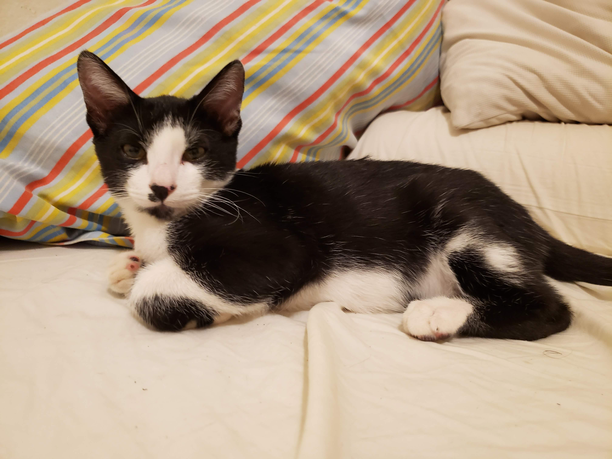
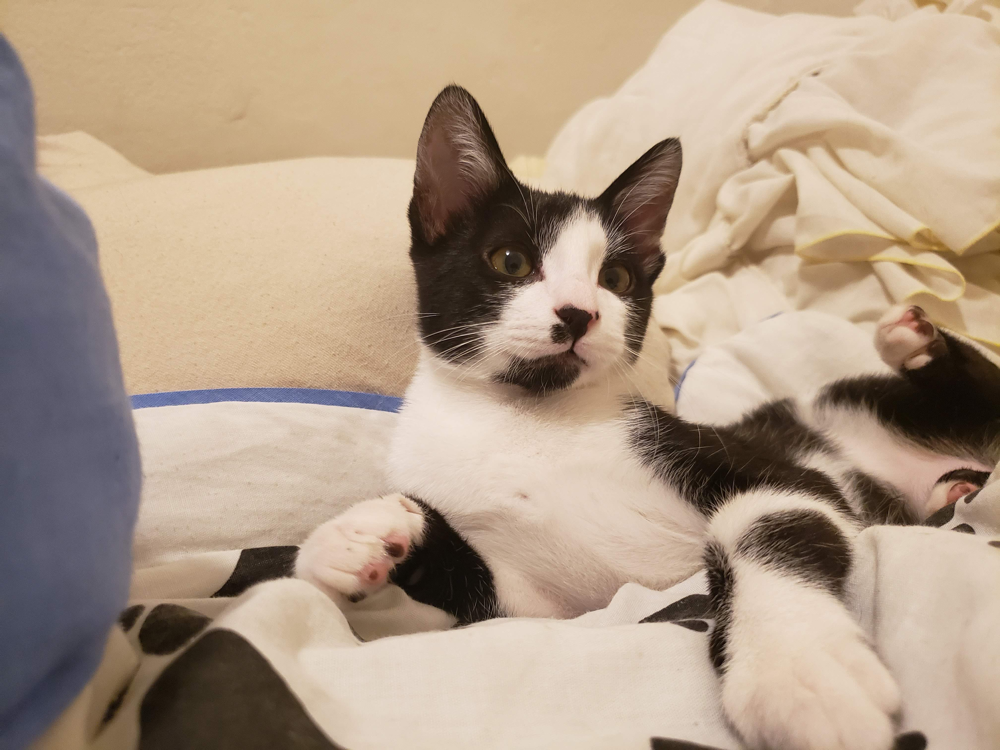
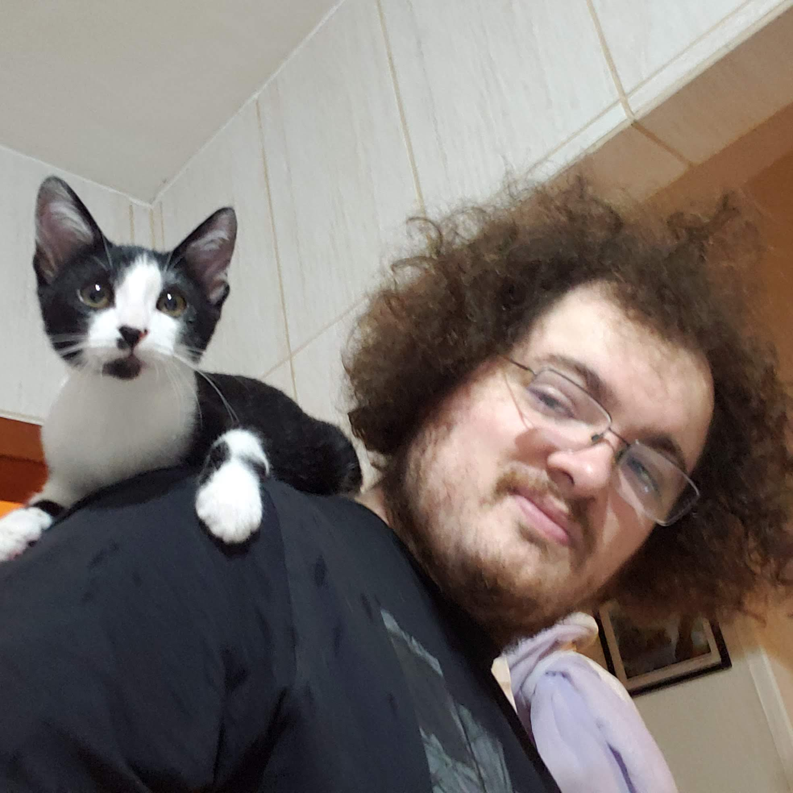

- Home
- >
- Gatos resgatados
- >
- Houdini
Houdini
Resgatado tendo por volta de dois meses, Houdini foi nomeado assim pela sua incrível capacidade de sumir dentro de um quarto fechado.
Muito esperto e agitado, é um gato que, ao mesmo tempo, é engraçado e irritante. Também é carente, pedindo atenção constante e puxando nossas mãos quando estamos mexendo no celular.
Acabou sendo adotado pelo lar temporário, que não conseguiu se desfazer dele.
← Voltar aos gatos